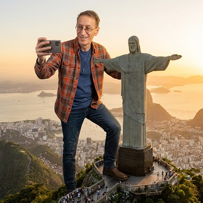

Gigantes en Monumentos IA

⚙️ Guía de Configuración Rápida
Personaliza los 4 parámetros clave antes de copiar el prompt para conseguir un efecto fotorrealista perfecto:
📍 1. Lugar o Monumento
Obligatorio
Indica la locación exacta o ciudad donde interactuará el gigante.
Ej: Obelisco de Buenos Aires, Av. 9 de Julio
⚡ 2. Interacción / Acción
Opcional
Indica qué hace el gigante o déjalo en blanco para que la IA elija.
Ej: Apoyando los codos o sentado en la avenida
🌤️ 3. Hora / Clima
Opcional
Ambiente lumínico (por defecto aplicará luz dorada cinematográfica).
Ej: Atardecer dorado, día despejado, noche lluviosa
🎭 4. Actitud / Expresión
Opcional
Emoción facial del sujeto (por defecto será curiosa y natural).
Ej: Curiosa, relajada, divertida, asombrada🛡️ Reglas Maestras Anti-Ghosting Integradas
- Apoyo Sólido (Grounding): Cero transparencias; física de contacto con sombras de oclusión ambiental hiperrealistas.
- Acción Dinámica: Interacción inteligente con edificios, monumentos o el terreno sin deformaciones.
- Escala y Atmósfera: Perspectiva colosal con micro-coches, micro-peatones y acabado fotográfico profesional 8K (f/8).
Prompt para copiar
--- DATOS DE CONFIGURACIÓN --- 1. 📍 LUGAR O MONUMENTO: [Escribe aquí el lugar, ej: Obelisco de Buenos Aires, Avenida 9 de Julio] 2. ⚡ INTERACCIÓN / ACCIÓN (Opcional): [Escribe la acción O déjalo en blanco para que la IA invente una coherente] 3. 🌤️ HORA DEL DÍA / CLIMA (Opcional): [Ej: Atardecer dorado, día despejado, noche] 4. 🎭 ACTITUD / EXPRESIÓN (Opcional): [Ej: Curiosa, relajada, divertida] -------------------------------- [INSTRUCCIÓN MAESTRA DE RENDERIZADO]: Genera un composite fotorrealista y cinematográfico basado en la persona de la imagen adjunta, transformada en un gigante colosal interactuando con el LUGAR configurado arriba. REGLAS CRÍTICAS DE CONTACTO FÍSICO E INTEGRACIÓN LIMPIA (ANTI-GHOSTING): 1. APOYO SÓLIDO Y FÍSICA DE CONTACTO (GROUNDING): - CERO TRANSPARENCIA / CERO DIFUMINADOS: La figura del sujeto debe ser 100% opaca y sólida. Prohibido desvanecer extremidades o ropa dentro de edificios, árboles o asfalto. - Puntos de contacto hiperrealistas: los pies, zapatos, rodillas o manos deben estar FIRMEMENTE apoyados sobre la superficie (asfalto, plazas, techos de edificios o terreno). - Sombras de contacto y oclusión ambiental (Ambient Occlusion): Genera sombras densas, oscuras y detalladas exactamente donde la suela del zapato, la rodilla o la mano tocan el suelo o la arquitectura, anclando el peso real del gigante a la escena. - Interacción con obstáculos: Si una pierna o brazo pasa detrás de un edificio o árbol, el corte debe ser nítido por profundidad de campo (oclusión limpia), nunca una mezcla transparente. 2. ACCIÓN DINÁMICA CON EL ENTORNO: - Si "INTERACCIÓN / ACCIÓN" tiene texto, aplícala con exactitud. - Si el campo está VACÍO, genera una interacción física inteligente con el entorno (ej. tocando con la yema del dedo la punta del monumento, apoyando los codos en cornisas, sentándose con los pies en la avenida o inclinándose con cuidado entre los edificios). - Expresión y actitud según el campo "ACTITUD / EXPRESIÓN" (default: curiosa y natural). 3. ESCALA, ATMÓSFERA Y ACABADO FOTOGRÁFICO: - Escala colosal extrema evidenciada por micro-coches, calles diminutas y peatones a escala real bajo el gigante. - Niebla atmosférica y neblina realista solo en el horizonte y capas de profundidad lejanas, manteniendo el sujeto nítido y en foco. - Iluminación, sombras proyectadas sobre la ciudad y balance de color integrados perfectamente según "HORA DEL DÍA / CLIMA" (default: hora dorada cinematográfica, f/8, 8k, estilo fotografía de viajes profesional).